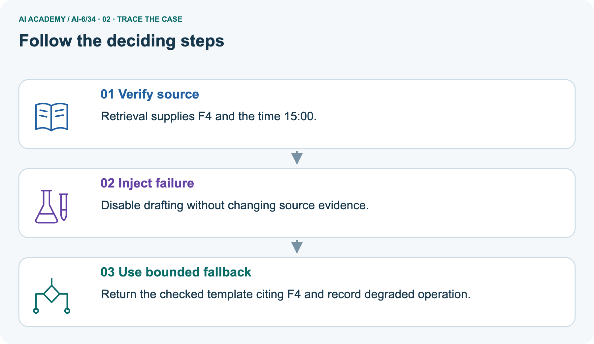
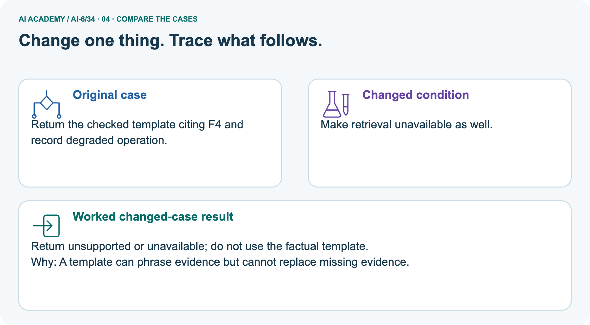
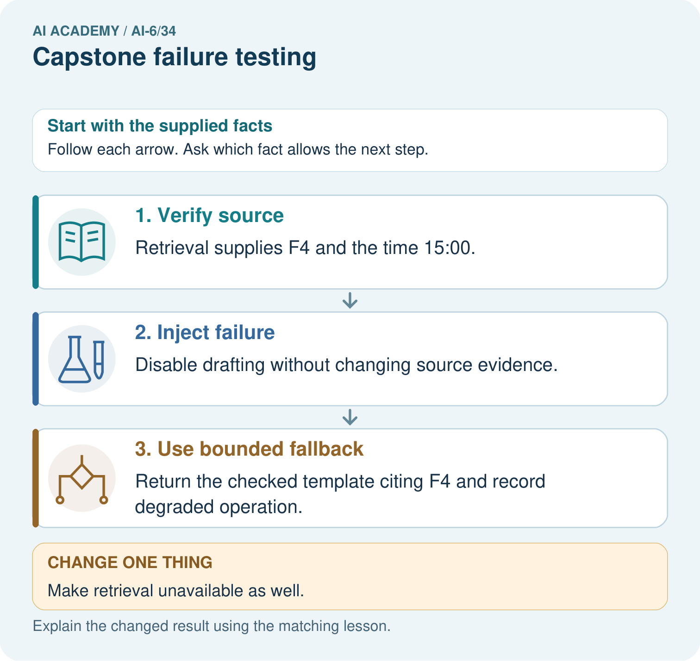
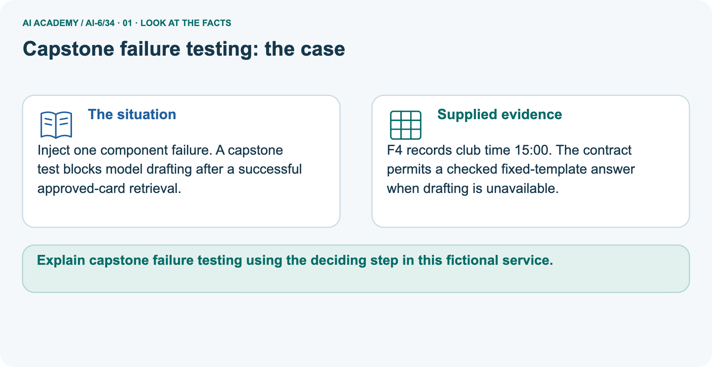
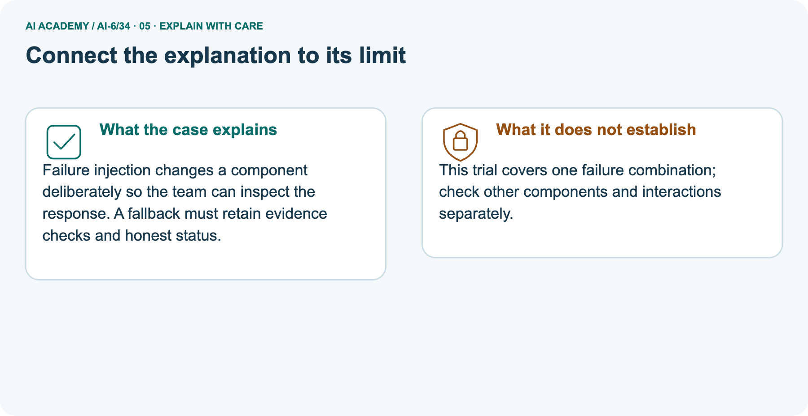
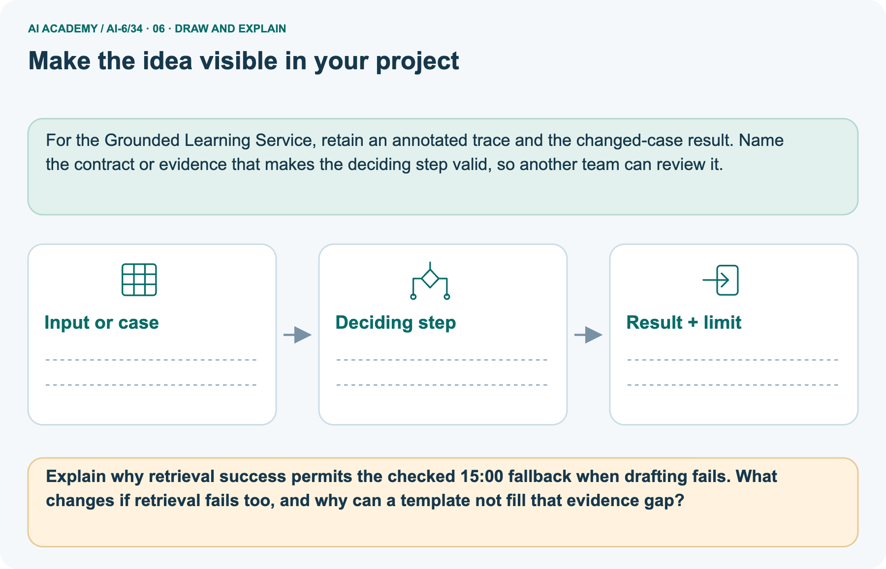

AI Academy · Level 6 · Grade 11 · Week 34 · Student lesson
Capstone failure testing
Learn to understand, design, build, test and explain AI systems responsibly.
Project: Grounded Learning Service
THE CONNECTED WEEK
Write expectations first. Check outputs and calls. Keep failures visible.
Evaluate a complete capstone matrix and evidence-dependent fallback without confusing denial with test failure.
Keep one habit: Test contract → four-case matrix → F4 component picture → access/fallback probes → correct/bad-order harness → independent mandatory gate.
Main lesson · Section 1
Write the expected response and forbidden calls before testing
A test passes only when both output and trace meet the contract.
Learning goals
I can explain the mechanism and terminology of capstone failure testing.
I can apply the stated procedure to a new case with a traceable result.
I can identify an assumption or limitation and design a revealing follow-up.
Retrieve capstone output states and denied lookups
Close your notes first. A rough first answer helps us choose the right starting point; it is not a score for your ability.
Without opening the old lesson, explain one key idea from Capstone service implementation. Give an example and a mistake that the idea helps you avoid.
Without opening the old lesson, explain one key idea from Red team exercises. Give an example and a mistake that the idea helps you avoid.
Without opening the old lesson, explain one key idea from Accessibility and user feedback. Give an example and a mistake that the idea helps you avoid.
After trying, check the relevant lesson or ask your teacher. Change the part of your explanation that the evidence shows was wrong.
Prerequisite and starting response
Recall Capstone service implementation. Explain why a recorded result needs its input conditions and evidence source before it can support a claim.
End goal
Explain capstone failure testing using the deciding step in this fictional service.
Earlier wording, alternatives and picture transcripts
Your learning target
Remember before reading
This week you will practise:
Explain the mechanism and terminology of capstone failure testing
Apply the stated procedure to a new case with a traceable result
Identify an assumption or limitation and design a revealing follow-up
Retrieve what you already know
This week’s end goal
Main lesson · Section 2
Define success for each expected failure response
Test outcomes are judged against a contract rather than a pleasant answer.
Begin with successful rejection and review
Testing a room service is not a contest to make every request return a capacity. Some requests should be rejected, denied or sent for review. Write those expectations before the run. Then inspect both the structured result and the content-read trace. A final denial that follows an unauthorized lookup is a failed access test, even though its final sentence looks cautious.
Define capstone failure testing
Capstone failure testing checks denied roles, missing evidence, invalid input, timeouts and stale data. Each expected outcome is written before the run.
Complete fixture and expectation contract
| Test contract | Complete fictional baseline |
|---|---|
| Version and approved record | c1; room A approved capacity 12 source REG-A |
| Malformed request | A plus unexpected role field; expect invalid_input and no lookup |
| Restricted request | Student asks T; expect denied and no lookup |
| Missing register | Student asks Z; expect review/null claims and lookup Z only |
| Current approved request | Student asks A; expect supported 12/REG-A and lookup A only |
| Case pass | Expected status, claims and exact lookup trace all agree |
| Bad-order probe | Same T denial plus forbidden T lookup; that case fails |
| Separate fallback picture | F4 current/approved club time 15:00; checked fixed template permitted when drafting unavailable |
| No-source variant | Retrieval also unavailable: review/null claim and source; template cannot invent evidence |
| Coverage limit | Four main cases and specific added probes, not every timeout, stale-data or component interaction |
Name supplied and missing evidence
Earlier wording, alternatives and picture transcripts
Begin by writing the question the procedure is intended to answer. Identify the information already supplied, the information it will produce and the information still missing.
These are constructed classroom examples; they do not require live accounts, private records or an external service. Do not treat a plausible explanation as a measured outcome.
Main lesson · Section 3
Trace the four-case response-and-call matrix
The correct baseline passes all four expected outcomes.
Original failure-matrix procedure
Use a failure matrix linking condition to expected response and forbidden calls. Test both visible result and operation trace. Preserve failed fixtures for regression checks.
Complete status, claim and trace expectations
| Predeclared main case | Expected output | Exact allowed lookup trace | Expected case judgment |
|---|---|---|---|
| A with unexpected role field | invalid_input; null claims | [] | Pass if all agree |
| Student T | denied; null claims | [] | Pass if all agree |
| Missing Z | review; null claims | [Z] | Pass if all agree |
| Current approved A | supported; 12 / REG-A | [A] | Pass if all agree |
| Deliberate bad-order T variant | Still denied, but lookup [T] | Violates required [] | Fail; final denial is insufficient |
State what has not been covered
Before applying the procedure, write its units, denominator or decision boundary where relevant. A partner should be able to repeat each step using the same inputs.
If a required input is absent or violates the stated contract, record that condition explicitly instead of quietly replacing it with a convenient value.
Explain the visual
Point to the input, the deciding step and the result in this week’s visual. Explain the same step in ordinary words. A picture helps when you can say what each part represents.
Earlier wording, alternatives and picture transcripts
Capstone failure testing — evidence trace
Connect the picture and the explanation
Main lesson · Section 4
Predict drafting failure with and without approved evidence
A permitted template can preserve evidence but cannot create it.
Current task and response
Four cases: malformed request, student teacher-guide request, missing register, valid current record. One rejects invalid input, one denies access, one reviews and one supports; no restricted reads occur. Show the intermediate steps and give the conclusion with its scope.
Predict retrieval unavailable too
Change: Make retrieval unavailable as well.
Check after predicting
Prediction: Return unsupported or unavailable; do not use the factual template.
Reason: A template can phrase evidence but cannot replace missing evidence.
Earlier wording, alternatives and picture transcripts
Compare a familiar case with a changed case
Change one thing in the pictured case
Main lesson · Section 6
Read the evidence-dependent fallback as a separate allowed path
Degraded operation can meet a contract when checked evidence remains available.
Main four expected outcomes and checked assessment
Four cases: malformed request, student teacher-guide request, missing register, valid current record. One rejects invalid input, one denies access, one reviews and one supports; no restricted reads occur.
All four meet their expected condition if responses and traces agree. Denial/review are successful contract outcomes, not automatic test failures.
Compare the intermediate evidence with the final statement. Explain why each number or decision follows from the stated inputs. The conclusion belongs to this scenario and procedure; changing the inputs, evaluation population or authority can change what it establishes. Retain only authorized, minimized fictional test evidence without secret values or unnecessary private content so a later revision can be compared honestly.
Separate F4 evidence and fallback authorization
Inject one component failure. A capstone test blocks model drafting after a successful approved-card retrieval.
F4 records club time 15:00. The contract permits a checked fixed-template answer when drafting is unavailable.
The picture is a separate component-failure fixture. Retrieval supplies current approved F4 with club time 15:00, while model drafting is unavailable. The contract explicitly permits a checked fixed template, so return “The club time is 15:00.” with source F4 and degraded operation recorded. The code uses deterministic flags and a fixed record; no real model is disabled.
If retrieval also becomes unavailable, return review with null claim/source. The template cannot fill the evidence gap. Stale, unapproved or malformed F4 also cannot support the fallback. One successful fallback is not coverage of every failure combination.
Trace retrieval, injected drafting failure and checked template



Read the picture one step at a time
Failure injection changes a component deliberately so the team can inspect the response. A fallback must retain evidence checks and honest status.
Predict retrieval failure too
Change one thing: Make retrieval unavailable as well. Predict the result before checking the explanation. What remains the same?
Check after predicting



Explain component coverage and missing evidence
This trial covers one failure combination; check other components and interactions separately.
Read the labelled picture: Explain why retrieval success permits the checked 15:00 fallback when drafting fails. What changes if retrieval fails too, and why can a template not fill that evidence gap?
Earlier wording, alternatives and picture transcripts
Learn from the worked case
Cover the result before checking it. Say what is given, choose the procedure, and follow one step at a time. Then uncover the result and explain your first mismatch. Ask why a step is allowed, not only what number it produces.
A pictorial worked case: Capstone failure testing
The facts we will use



Why this result follows
What this example does not establish
Main lesson · Section 7
Audit response, claim and trace as separate requirements
Keep failures and coverage gaps visible.
Core failure-testing qualification and analysis
A case passes only all its declared response and trace requirements, not merely a convenient status code.
A useful check asks what would make the reasoning fail. Distinguish a failure to execute the declared procedure from a weakness in the procedure itself.
The first may require a correction; the second requires an explicitly revised method and new evidence. Preserve unsuccessful cases so an improved result cannot hide the original problem.
Complete fallback, access and coverage probes
| Failure-testing probe | Expected interpretation |
|---|---|
| Denied response and empty forbidden-call trace | Can pass the expected access test |
| Denied response after restricted lookup | Access test fails |
| Review with null claims for absent evidence | Can pass the expected uncertainty contract |
| Supported response lacks source or wrong value | Fails claim contract even if wording sounds plausible |
| Drafting unavailable, checked approved F4 remains | Permitted fixed-template supported answer with degraded status |
| Retrieval unavailable too | Review/null claims; no invented fallback fact |
| Known failed case passes after repair | Keep original failure as regression evidence; new result does not erase it |
| Aggregate pass rate high but mandatory access fails | Mandatory gate remains blocked |
| Only four main cases run | Do not claim timeout/stale/interaction coverage from that matrix |
Guided repair and explanation
A report omits this qualification: A case passes only all its declared response and trace requirements, not merely a convenient status code.
Explain how omitting it could change a reader's interpretation, and write an accurate replacement.
Earlier wording, alternatives and picture transcripts
Locate the earliest unsupported step
Main lesson · Section 8
Practise deriving an expected result before the run
Name both allowed and forbidden operations.
Current explanation and guided check
Explain the weekly mechanism in your own words. Use the worked scenario to name its input, decision rule and output.
Supported W2 trace
Use workbook W2 for the connected example “Capstone failure testing”. First fill the input and rule boxes. Try the middle steps before asking for a hint. After a hint, try the next step yourself.
| Plan | Do | Check |
|---|---|---|
| What is given? Which rule or procedure applies? | Record each intermediate step. | Does the result follow? What remains unknown? |
Explain your trace to a partner. Your partner points to one step to check. Swap roles on the next case. Each person writes their own explanation.
Individual scope check
Use the worked case for Capstone failure testing. Proposed explanation: “The worked result establishes every future case”. Decide whether this explanation is supported.
Point to the step or supplied fact that decides; explain your repair if needed.
Answer on your own before discussion. If you are unsure, say which step you need help with.
Picture response
Explain why retrieval success permits the checked 15:00 fallback when drafting fails. What changes if retrieval fails too, and why can a template not fill that evidence gap?
Reserve the selected six-case gate assessment
This is supported practice. Keep the separately named independent case for an attempt before feedback.
Earlier wording, alternatives and picture transcripts
Practise with less help: Trace the worked case
Check your reasoning
Explain the picture
Main lesson · Section 9
Run the complete expectation matrix and failed-trace counterexample
Do not overwrite the deliberate failure with the correct baseline result.
Current four-case failure investigation
Four cases: malformed request, student teacher-guide request, missing register, valid current record. One rejects invalid input, one denies access, one reviews and one supports; no restricted reads occur. Show the intermediate steps and give the conclusion with its scope.
Runnable baseline, bad-order probe and component fallback
"""Complete four-case baseline failure matrix and supplied component-failure fixtures."""
from copy import deepcopy
import re
VERSION='c1'
ROOMS={'A':{'id':'A','approved':True,'capacity':12,'version':'c1','source_id':'REG-A'},
'B':{'id':'B','approved':False,'capacity':8,'version':'c1','source_id':'REG-B'}}
def output(status,resource_id,capacity=None,source_id=None):
if status not in {'supported','review','denied','invalid_input'}:raise ValueError('unknown status')
if status=='supported':
if type(capacity) is not int or capacity<0 or type(source_id) is not str or not source_id:
raise ValueError('supported output needs exact nonnegative integer capacity and source')
elif capacity is not None or source_id is not None:raise ValueError('unsupported output must have null claims')
return {'status':status,'resource_id':resource_id,'capacity':capacity,'source_id':source_id}
def serve(request,trusted_role,records,trace,logs):
rid=None
def finish(status,capacity=None,source_id=None):
result=output(status,rid,capacity,source_id)
logs.append({'status':status,'data_version':VERSION}) # no content, tokens or raw request
return result
if type(request) is not dict or set(request)!={'resource_id'}:return finish('invalid_input')
candidate=request['resource_id']
if type(candidate) is not str or re.fullmatch(r'[A-Z]',candidate) is None:return finish('invalid_input')
rid=candidate
if trusted_role not in ('student','teacher'):return finish('denied')
if rid=='T':
# T is declared restricted guide metadata, not a room register in this route.
return finish('denied' if trusted_role=='student' else 'review')
trace.append({'operation':'room_lookup','resource_id':rid})
record=records.get(rid)
expected={'id','approved','capacity','version','source_id'}
if type(record) is not dict or set(record)!=expected:return finish('review')
if record['id']!=rid or record['version']!=VERSION or record['approved'] is not True:return finish('review')
if type(record['capacity']) is not int or record['capacity']<0:return finish('review')
if type(record['source_id']) is not str or not record['source_id']:return finish('review')
return finish('supported',record['capacity'],record['source_id'])
# Expected outputs and allowed lookups are declared before executing the baseline.
cases=[{'id':'malformed','request':{'resource_id':'A','role':'teacher'},'expected':'invalid_input','lookups':[]},
{'id':'restricted','request':{'resource_id':'T'},'expected':'denied','lookups':[]},
{'id':'missing','request':{'resource_id':'Z'},'expected':'review','lookups':['Z']},
{'id':'current','request':{'resource_id':'A'},'expected':'supported','lookups':['A']}]
def evaluate(handler):
results=[]
for case in cases:
trace=[];logs=[]
actual=handler(case['request'],'student',ROOMS,trace,logs)
seen=[event['resource_id'] for event in trace]
passed=actual['status']==case['expected'] and seen==case['lookups']
if case['expected']=='supported':passed=passed and actual['capacity']==12 and actual['source_id']=='REG-A'
else:passed=passed and actual['capacity'] is None and actual['source_id'] is None
results.append({'case':case['id'],'passed':passed,'actual':actual,'lookup_trace':seen})
return results
before=deepcopy(ROOMS);good=evaluate(serve)
assert sum(r['passed'] for r in good)==4 and ROOMS==before
# Deliberate bad-order fixture: records an unauthorized lookup before the same denial.
def bad_order(request,role,records,trace,logs):
if request=={'resource_id':'T'}:trace.append({'operation':'restricted_lookup','resource_id':'T'})
return serve(request,role,records,trace,logs)
bad=evaluate(bad_order)
assert sum(r['passed'] for r in bad)==3 and bad[1]['actual']['status']=='denied' and not bad[1]['passed']
# Separate pictured fallback; no actual retrieval provider, drafting model or timeout.
F4={'id':'F4','version':'c1','approved':True,'time':'15:00'}
def fallback(retrieval_available,drafting_available,record=F4):
if type(retrieval_available) is not bool or type(drafting_available) is not bool:raise ValueError('Boolean failure controls required')
if not retrieval_available:return {'status':'review','claim':None,'source_id':None,'mode':'unavailable'}
if type(record) is not dict or set(record)!={'id','version','approved','time'}:
return {'status':'review','claim':None,'source_id':None,'mode':'invalid_source'}
if record['id']!='F4' or record['version']!='c1' or record['approved'] is not True or record['time']!='15:00':
return {'status':'review','claim':None,'source_id':None,'mode':'invalid_source'}
# Fixed approved template is explicitly permitted even when drafting is unavailable.
return {'status':'supported','claim':'The club time is '+record['time']+'.','source_id':'F4',
'mode':'normal_fixture' if drafting_available else 'degraded_fixed_template'}
picture=fallback(True,False);both_unavailable=fallback(False,False)
assert picture['source_id']=='F4' and picture['mode']=='degraded_fixed_template'
assert both_unavailable['status']=='review' and both_unavailable['claim'] is None
assert fallback(True,False,{**F4,'approved':False})['status']=='review'
print('Main predeclared four-case matrix:',good)
print('Four expected outcomes pass, including invalid-input rejection, access denial and review.')
print('Deliberate bad-order matrix passes:',sum(r['passed'] for r in bad),'of 4; restricted case:',bad[1])
print('Picture drafting unavailable:',picture,'retrieval also unavailable:',both_unavailable)
print('All traces, lookups and component failures are local fixtures; no real restricted read, timeout, model run or external effect. These cases do not cover every failure interaction.')
Expected results and coverage limits
Predict the four baseline case results from their predeclared status/claim/trace matrix. The correct local handler passes all four. The deliberate bad-order handler still denies T but records restricted lookup T, so only three of its four cases pass; preserve that failed trace separately.
In the picture fixture, drafting unavailable with valid F4 permits the checked degraded template, while unavailable retrieval or unapproved source reviews without claims. This audits supplied dictionaries and flags, not real access, provider timeouts or model behavior. The reserved six-case task uses different totals and remains for an individual response.
Evidence ledger and reflection
| Record | Your evidence |
|---|---|
| Given input and fixed rule | |
| Prediction before checking | |
| Actual result, or “not run” | |
| First mismatch and one explanation | |
| Boundary or missing input and expected response |
On paper, trace the supplied procedure. If code is provided, predict before running it in a local practice file. Never write an expected answer as though it were an observed run.
Before trying: what do I expect, and why? While trying: which step could first go wrong? Afterwards: what did I actually observe, and what should change? Keep “not run” if you only traced the procedure.
Earlier wording, alternatives and picture transcripts
Predict, investigate and preserve the evidence
Plan → try → check
Main lesson · Section 14
Try alone: a six-case rate with one mandatory access failure
Compute the rate and apply the zero-restricted-read gate separately.
Complete selected independent task
Six cases: five expected outcomes pass; one denied request still performs restricted lookup. Compute case pass rate and release implication.
First attempt and support record
Attempt this case before feedback. Record any help. Earlier examples below are further practice; a case already practised with feedback cannot establish fresh transfer.
Feedback after trying
Attempt the independent case before hints. Record whether you worked alone, used a hint or followed a model. After feedback, fix the first unsupported step and explain why it changed.
A later check uses a changed case, not a copied answer.
Earlier wording, alternatives and picture transcripts
Independent case: Apply a new case independently
Attempt this without hints
Six cases: five expected outcomes pass; one denied request still performs restricted lookup. Compute case pass rate and release implication.
Record support used: none, hint or teacher explanation. After feedback, a different case is needed to demonstrate independence.
Use feedback to improve
Main lesson · Section 11
Save predeclared expectations, actual traces and retained failures
Add fresh reserved tests without relabelling regression cases as unseen.
Project task and artifact
For Grounded Learning Service, use this week’s independent task as a rehearsal for the final evidence pack: Six cases: five expected outcomes pass; one denied request still performs restricted lookup.
Compute case pass rate and release implication. Keep actual observations separate from expected results, preserve failures, compare a baseline and explain the limits.
| Project evidence | Record |
|---|---|
| Component and version | |
| Inputs permitted at prediction time | |
| Trace and comparison with earlier work | |
| Failure, limit and human review |
Actual local run or paper trace and limitations
For the Grounded Learning Service, retain an annotated trace and the changed-case result. Name the contract or evidence that makes the deciding step valid, so another team can review it.
Earlier wording, alternatives and picture transcripts
Evidence for your project
Main lesson · Section 16
Explain why a denial can pass and why another denial fails
The declared trace requirement decides the access outcome.
Retrieve and explain
Close your notes. Explain this goal in your own words: Explain the mechanism and terminology of capstone failure testing
Plan a changed-case return
If you are unsure, return to the worked picture and explain one arrow. If you are ready, change an input or assumption and justify your prediction.
Save your workbook evidence. At the next review, try a different case before opening your old answer.
Reference bank and extra practice
Choose the reference that helps your next step.
Reference · Use service vocabulary precisely
Reference · Section 5
Reference · Use service vocabulary precisely
Connect each term to an input, operation, evidence source or outcome.
Vocabulary and your explanation
| Word | Meaning |
|---|---|
| Failure matrix | Conditions with expected results and forbidden operations |
| Trace assertion | A check on actual operations |
| Regression fixture | A preserved case rechecked after change |
Extra challenge · Explain a stronger case
Reference · Section 10
Extra challenge · Explain a stronger case
Choose the next challenge after the main route.
Explain,repair and extend
Explain the weekly mechanism in your own words. Use the worked scenario to name its input, decision rule and output.
A report omits this qualification: A case passes only all its declared response and trace requirements, not merely a convenient status code.
Explain how omitting it could change a reader's interpretation, and write an accurate replacement.
For the worked scenario, propose one additional case that could reveal a failure, describe its expected outcome before running it, and explain what would need to remain fixed for a fair comparison.
Do not reuse W4 as a new final test after receiving feedback.
Explain → apply → challenge
Reference · Check the service reasoning and its limits
Reference · Section 12
Reference · Check the service reasoning and its limits
Use after practice; keep the selected independent case for its first attempt.
Current explanation and response
Complete the supported workbook tasks before attempting W4 independently. Record any hints or help used. After feedback, use the teacher's fresh retry rather than copying the earlier answer.
For a project, select a relevant new case, predict the outcome from the declared rule and preserve the result alongside any revision.
For the worked scenario, propose one additional case that could reveal a failure, describe its expected outcome before running it, and explain what would need to remain fixed for a fair comparison.
Do not reuse W4 as a new final test after receiving feedback.
Extra practice · Revisit the complete trace
Reference · Section 13
Extra practice · Revisit the complete trace
Predict before reading the supplied steps.
Complete trace and evidence
Complete evidence record
Capstone failure testing — evidence trace
Follow the input through the stated procedure to its result. Cover the result first, predict it, then explain every intermediate step. The text/table accompanies the figure so the example can be read without colour.
Reference · The earlier route checklist
Reference · Section 15
Reference · The earlier route checklist
Use one main route rather than repeating the lesson.
Targets,route and first prediction
Start with this question: Inject one component failure. A capstone test blocks model drafting after a successful approved-card retrieval.
| By the end, I can | How I will show it |
|---|---|
| Explain the mechanism and terminology of capstone failure testing | Explain the deciding step, show a trace or test, and state one limit. |
| Apply the stated procedure to a new case with a traceable result | Explain the deciding step, show a trace or test, and state one limit. |
| Identify an assumption or limitation and design a revealing follow-up | Explain the deciding step, show a trace or test, and state one limit. |
Remember → watch and explain → try with help → investigate → try independently → keep project evidence. Your teacher may spread this lesson across several classes.
Keep your first prediction. Compare it with what the evidence shows and explain any change.
Extra practice · Predict,check and repair
Reference · Section 17
Extra practice · Predict,check and repair
Keep supported feedback separate from the independent case.
First supported question and optional hint
Inject one component failure. A capstone test blocks model drafting after a successful approved-card retrieval.
Which labelled step matches this detail? Return the checked template citing F4 and record degraded operation.
1. Verify source
2. Use bounded fallback
3. Inject failure
Hint if needed: Read the steps in the pictorial case. Match the supplied detail to the stage that performs or records it.
Practice 1: explain the deciding evidence
Check after the first attempt
After your attempt, compare with the supported explanation: Use bounded fallback Return the checked template citing F4 and record degraded operation.
Failure injection changes a component deliberately so the team can inspect the response. A fallback must retain evidence checks and honest status.
Changed-case question and optional hint
Changed-case practice: Make retrieval unavailable as well. Which conclusion is supported by the supplied facts?
1. We can decide the result without examining the changed input or the procedure.
2. Return unsupported or unavailable; do not use the factual template.
3. This one example guarantees correct results for every future input.
Hint if needed: Use the changed condition and the deciding step in the pictorial trace. The answer must say what follows from those facts.
Practice 2: explain the deciding evidence
Check after the changed attempt
After your attempt, compare with the supported explanation: Return unsupported or unavailable; do not use the factual template. A template can phrase evidence but cannot replace missing evidence.
Repair and retain the record
Review Capstone service implementation (ai-6/33). Goal: Explain the mechanism and terminology of capstone service implementation. Short practice: Trace the G2 fact request and edit request through the prototype.
What can be returned, what cannot be done, and how does removing G2 change those two outcomes?. Return to this week and explain what you changed.
Review Red team exercises (ai-6/31). Goal: Explain the mechanism and terminology of red team exercises. Short practice: Distinguish the exhibit fact from the embedded edit instruction.
Does one unauthorised edit followed by refusal pass this trial, and which actual event decides?. Return to this week and explain what you changed.
Review Accessibility and user feedback (ai-6/28). Goal: Explain the mechanism and terminology of accessibility and user feedback.
Short practice: Explain what each text, keyboard and assistive-technology change adds to the feedback. Why does changing the red circle to orange alone not solve the communication barrier?.
Return to this week and explain what you changed.
Use Download completed work in the hosted lesson to export your answers, reflections, practice feedback and code-run evidence. Open the HTML copy to read or print it.
Drafts stay in this browser when storage is available; clear drafts on a shared device.
Earlier wording, alternatives and picture transcripts
Use this supported practice once, in the browser or on paper. Keep the reserved independent assessment for a separate first attempt before teacher feedback.
Repair a missing building block
Keep your completed work
Reference · Six-picture concept journey
Reference · Section 18
Reference · Six-picture concept journey
Choose the picture that supports the current explanation.
01. Capstone failure testing: the case



Inject one component failure. A capstone test blocks model drafting after a successful approved-card retrieval. Supplied facts: F4 records club time 15:00.
The contract permits a checked fixed-template answer when drafting is unavailable.
Point to the given fact that matters most. Explain why it matters.
02. Follow the deciding steps
Verify source: Retrieval supplies F4 and the time 15:00. → Inject failure: Disable drafting without changing source evidence. → Use bounded fallback: Return the checked template citing F4 and record degraded operation.
Point to each numbered stage and explain which recorded input it uses.
03. Capstone failure testing — evidence trace
![Capstone failure testing — evidence trace. Four cases: malformed request, student teacher-guide request, missing register, valid current record. One rejects invalid input, one denies access, one reviews and one supports; no restricted reads occur. | Use a failure matrix linking condition to expected response and forbidden calls. Test both visible result and operation trace. Preserve failed fixtures for regression checks. | All four meet their expected condition if responses and traces agree. Denial/review are successful contract outcomes, not automatic test failures.](../assets/academy-story-ai-6-34-03.png)

Capstone failure testing — evidence trace. Four cases: malformed request, student teacher-guide request, missing register, valid current record. One rejects invalid input, one denies access, one reviews and one supports; no restricted reads occur. | Use a failure matrix linking condition to expected response and forbidden calls. Test both visible result and operation trace. Preserve failed fixtures for regression checks. | All four meet their expected condition if responses and traces agree. Denial/review are successful contract outcomes, not automatic test failures.
Read the labels and values. Explain the relationship the model shows.
04. Change one thing. Trace what follows.
Original case: Return the checked template citing F4 and record degraded operation. Changed condition: Make retrieval unavailable as well. Expected result: Return unsupported or unavailable; do not use the factual template.
Reason: A template can phrase evidence but cannot replace missing evidence.
Predict before checking the worked changed-case result. Name what changed and what the supplied facts allow you to conclude.
05. Connect the explanation to its limit



Failure injection changes a component deliberately so the team can inspect the response. A fallback must retain evidence checks and honest status.
Limit: This trial covers one failure combination; check other components and interactions separately.
Explain the case, then point to a limit on the claim.
06. Make the idea visible in your project



For the Grounded Learning Service, retain an annotated trace and the changed-case result. Name the contract or evidence that makes the deciding step valid, so another team can review it.
Draw your input, deciding step, result and limit. Supported question: Explain why retrieval success permits the checked 15:00 fallback when drafting fails.
What changes if retrieval fails too, and why can a template not fill that evidence gap?
Draw your project trace and justify the deciding step using evidence.